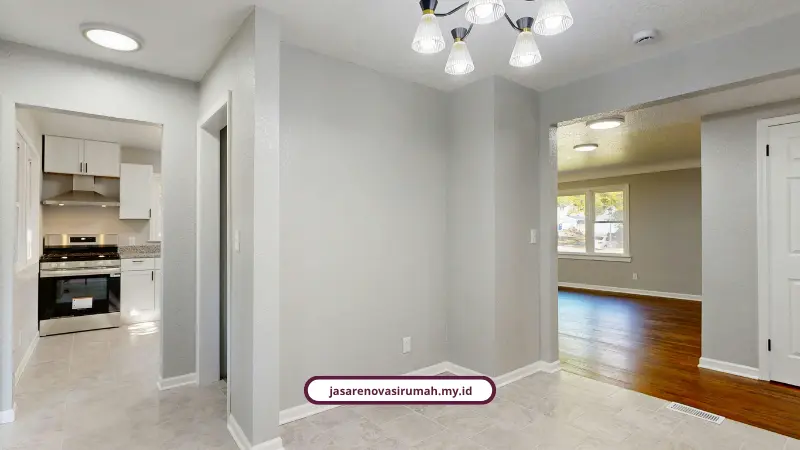

Rumah subsidi memang sering dianggap sempit, tetapi lahan belakang yang masih kosong justru bisa menjadi solusi untuk menambah fungsionalitas tanpa harus membeli rumah baru. Dengan pendekatan yang tepat, area sempit di belakang rumah bisa berubah menjadi dapur tambahan, area cuci, hingga taman kecil yang lebih fresh dan nyaman.
Di Malang, kebutuhan seperti ini semakin banyak muncul karena rumah tipe 36 atau 45 biasanya punya sisa lahan belakang yang tidak terpakai. Kondisi ini membuat renovasi rumah subsidi jadi pilihan yang lebih realistis dibanding membangun baru di kawasan padat.
Mengapa Lahan Belakang Rumah Subsidi Jadi Potensi Besar?
Biasanya rumah subsidi punya luasan bangunan yang efisien, namun area belakangnya masih belum dimanfaatkan. Padahal, ruang ini bisa berperan sebagai penambah fungsi tanpa harus menambah lantai atau mengubah bentuk rumah depan secara besar-besaran.
Jika ditata dengan benar, lahan belakang bisa menjadi area tambahan yang lebih hidup, seperti dapur semi terbuka, gudang kecil, area jemur, atau taman mini. Solusi ini sangat cocok untuk rumah dengan kebutuhan keluarga yang terus berkembang, terutama saat anak mulai besar dan kebutuhan aktivitas rumah makin kompleks.
Untuk melihat gambaran proyek serupa, Anda bisa membaca artikel tentang renovasi rumah Malang yang membahas pendekatan desain dan estimasi yang lebih umum, sekaligus membandingkan skala proyek antara rumah tipe kecil dan rumah keluarga modern.
Apa yang Boleh dan Tidak Boleh Direnovasi?
Untuk rumah subsidi, yang paling penting adalah menjaga kepatuhan terhadap aturan KPR dan perizinan yang berlaku. Renovasi yang aman biasanya tidak mengubah fasad depan secara drastis, tidak menambah lantai penuh, dan tetap menghormati batas kepemilikan tanah serta bobot struktur bangunan.
- Yang biasanya diperbolehkan: penambahan kanopi, penutup dinding dapur belakang, penataan lantai, pembuatan area cuci, penyelesaian dinding dan plafon, serta penambahan taman kecil yang tidak mengganggu struktur utama.
- Yang perlu hati-hati: menambah massa bangunan besar, membuka ruang depan untuk struktur baru, atau memperluas bangunan melewati garis sempadan yang ditetapkan.
Jadi, pendekatan terbaik adalah fokus pada fungsi dan tata ruang yang memperbaiki kenyamanan tanpa membahayakan status kepemilikan atau proses kredit. Itu juga alasan utama mengapa perencanaan mulai dari survei lokasi dan desain awal sangat penting sebelum pekerjaan dimulai.
Kalau Anda ingin melihat detail proses dari awal sampai selesai, baca proses kerja renovasi rumah kami agar Anda paham langkah-langkahnya sebelum tanda tangan kontrak.
Konsep Dapur Belakang yang Aman dan Nyaman
Konsep paling aman untuk rumah subsidi adalah memadukan fungsi dapur, area cuci, dan taman kecil dalam satu layout terbuka yang tetap teratur. Desain seperti ini membuat ruang terasa lebih lapang meski ukuran lahan terbatas.
- Gunakan atap transparan atau kanopi ringan agar sirkulasi udara tetap baik dan cahaya matahari masuk.
- Letakkan area cuci dan wastafel di sisi yang dekat dengan saluran air agar lebih praktis dan hemat.
- Pilih material yang tahan lembab seperti keramik anti slip, dinding cat anti jamur, dan rangka baja ringan yang kuat.
- Tambahkan tanaman kecil di sudut agar area tidak terasa sempit, kaku, atau terlalu steril.
Desain yang tepat tidak hanya membuat rumah lebih rapi, tetapi juga memberi rasa nyaman untuk aktivitas keluarga sehari-hari. Pada banyak proyek rumah subsidi, penambahan area belakang dengan konsep terbuka dan elegan sering kali jauh lebih efektif dibanding mengejar renovasi besar yang justru berisiko membebani struktur rumah.

Biaya Renovasi Dapur Belakang di Malang
Untuk rumah subsidi dengan luasan lahan sekitar 2 x 3 meter, biaya renovasi bisa bervariasi tergantung material dan skala pekerjaan. Biasanya untuk paket hemat, fokus pada struktur dasar, lantai, dan penutup dinding, Anda bisa mulai dari kisaran Rp4 juta sampai Rp8 juta.
Untuk paket yang lebih lengkap dengan kanopi, kitchen set sederhana, dan finishing yang lebih rapi, biasanya berada di kisaran Rp10 juta sampai Rp20 juta. Selalu pastikan biaya dihitung dengan RAB yang jelas supaya tidak muncul pembengkakan di tengah proses pengerjaan.
Untuk estimasi yang lebih presisi, baca cara menghitung estimasi biaya renovasi rumah Malang. Jika kebutuhan Anda juga mencakup perubahan kamar mandi, lihat estimasi biaya renovasi kamar mandi Malang untuk perbandingan kebutuhan material dan finishing.
Kenapa Tim Kami Cocok untuk Proyek seperti Ini?
Tim kami bekerja dengan pendekatan yang tidak sekadar membangun, tetapi menyesuaikan dengan aturan, kebutuhan keluarga, dan budget yang tersedia. Di setiap proyek, kami mulai dari survei lokasi, pembuatan konsep, hingga perhitungan biaya yang transparan.
- Desain dibuat sesuai kondisi lahan dan aturan KPR agar tidak membahayakan masa kredit.
- Material dipilih berdasarkan kebutuhan fungsional dan daya tahan terhadap cuaca tropis Malang.
- Proses pengerjaan diterapkan sesuai jadwal agar tidak mengganggu aktivitas keluarga.
Untuk kebutuhan yang lebih luas, kami juga menyediakan layanan yang terkait langsung dengan proyek rumah Anda, seperti jasa arsitek, jasa kontraktor rumah, dan jasa renovasi bangunan. Bila Anda masih ingin mengecek layanan lainnya, silakan lihat halaman layanan kami untuk memilih paket yang paling pas.
Baca Juga: Cara Menghitung Estimasi Biaya Renovasi Rumah Malang | Jasa Renovasi Rumah Malang: RAB Transparan & Garansi
Mulai Rencanakan Renovasi Belakang Rumah Subsidi Anda
Area belakang rumah subsidi bisa berubah menjadi ruang yang jauh lebih fungsional asalkan dilakukan dengan perencanaan yang benar. Jangan biarkan lahan terbengkalai, karena ruang itu bisa menjadi titik awal peningkatan kenyamanan keluarga tanpa mengorbankan kepatuhan aturan.
Hubungi kami sekarang lewat WhatsApp 0889-8964-3555 untuk konsultasi gratis dan survei lokasi. Kami siap membantu menata konsep yang aman, efisien, dan sesuai kebutuhan Anda.
FAQ Seputar Renovasi Rumah Subsidi Malang

Naura Regyna Putri
Penulis & Praktisi Konstruksi
Naura Regyna Putri menulis secara konsisten tentang rumah, desain fungsional, dan solusi renovasi yang sesuai dengan kebutuhan keluarga Indonesia. Fokusnya adalah membantu pemilik rumah membuat keputusan yang realistis, aman, dan efisien tanpa mengorbankan kenyamanan.